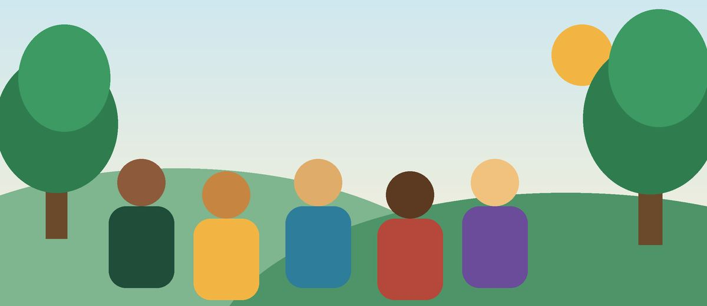

Instituto Raízes do Amanhã

Somos uma ONG que leva educação, cuidado com o meio ambiente e saúde a famílias da periferia de São Paulo desde 2012.
Missão, visão e valores
Missão
Promover o desenvolvimento humano e sustentável de comunidades em vulnerabilidade.
Visão
Ser referência em impacto social e transparência até 2030.
Valores
- Respeito
- Transparência
- Sustentabilidade
- Participação comunitária
Nossa história
- 2012: início do reforço escolar.
- 2016: criação da horta comunitária.
- 2020: atendimentos de saúde itinerantes.
- 2025: 10 mil pessoas atendidas.
Nossa equipe
Transparência
Nossas contas e atividades são públicas. Veja como usamos as doações na página de projetos e doações.
Contato
Rua das Acácias, 120 – Centro, São Paulo – SP.
Telefone: (11) 4000-1234
E-mail: contato@raizesdoamanha.org.br
Atendimento: segunda a sexta, das 9h às 17h.